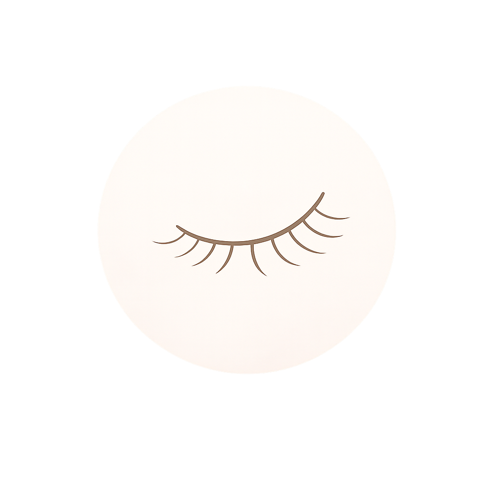
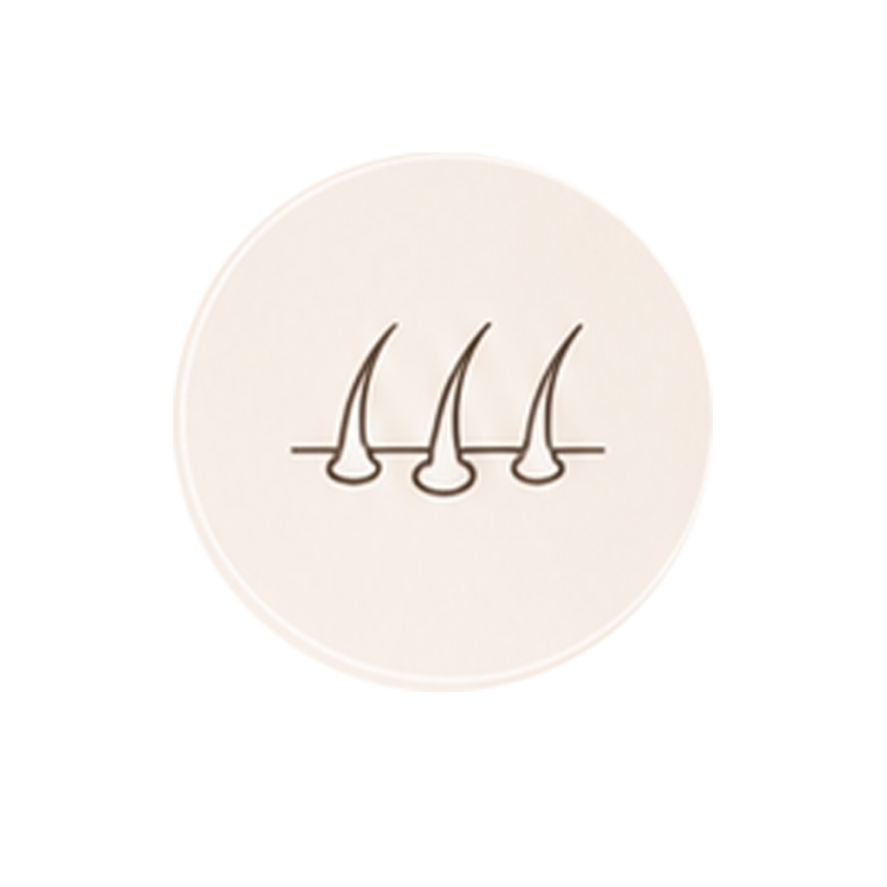
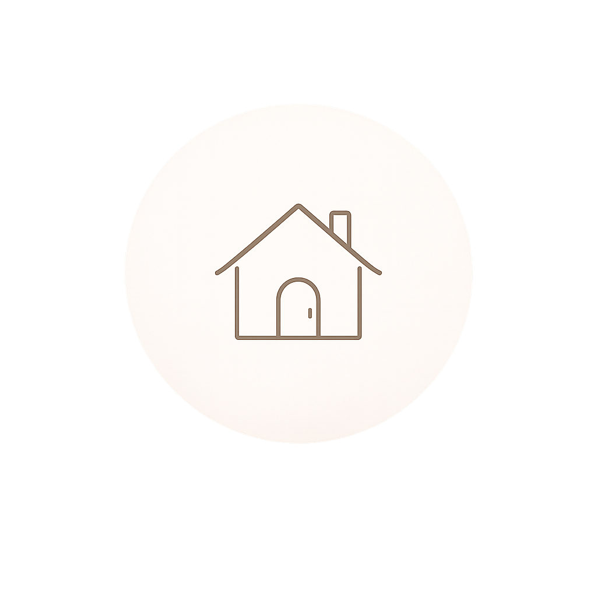
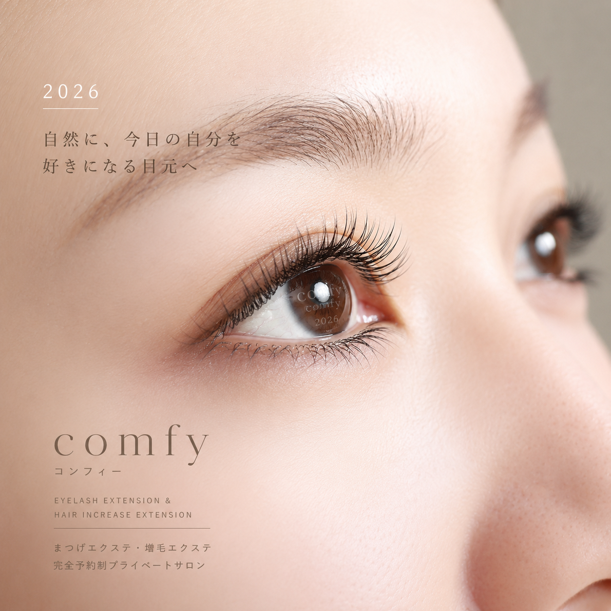

まつげエクステ
ナチュラルから華やかまで
理想の目元に
完全予約制のプライベートサロン Comfy。まつげエクステ・増毛エクステで、美しく、心地よい毎日を。
自然に、
今日の自分を
好きになる目元へ
Eyelash Extension &
Hair Increase Extension
完全予約制のプライベートサロン Comfy。
まつげエクステ・増毛エクステで、
美しく、心地よい毎日を。

ナチュラルから華やかまで
理想の目元に

自然にボリュームアップ
気になる部分をカバー

落ち着いたプライベート空間で
ゆったり施術
仕事、家庭、日々の予定。自分のことを後回しにしがちな毎日でも、鏡を見るたび少し気持ちが整うように。Comfyは、ナチュラルで存在感のある目元づくりを大切にしています。
施術中もゆったり過ごせる空間、腰への負担を軽減するリクライニングソファー、低刺激で日本製にこだわったグルー。見た目の美しさだけでなく、安心して通えることまで丁寧に整えます。

完全予約制だから、周りを気にせず相談できます。初めての方にも長く通う方にも、似合うデザイン・扱いやすさ・安全性を一緒に確認しながら施術します。
周りを気にせず、落ち着いて相談できる時間を整えています。
派手すぎない自然な目元から、華やかな印象までご相談ください。
低刺激で日本製にこだわったグルーを使用しています。
リクライニングソファーで、ゆったり過ごせる空間です。
お仕事帰りや日々の予定に合わせて通いやすい立地です。
ご予約から施術までの流れ
希望日時と気になることをお知らせください。体調やアレルギーが心配な方も事前に相談できます。
目元や髪の状態、普段の過ごし方、理想の印象を確認しながらデザインを決めます。
リクライニングソファーでゆったり過ごせるよう、空間と手順を丁寧に整えます。
ご自宅での扱い方や次回来店の目安まで、自然に長持ちさせるポイントをお伝えします。
免疫力が低下している場合、まれにアレルギー反応が出ることがあります。心配な方は事前にお問い合わせください。
はい。普段のメイク、希望の印象、扱いやすさを伺いながら自然に見えるデザインを提案します。
完全予約制です。ご来店前に予約・お問い合わせをお願いします。
施術内容、空き時間、初めてのご相談など、お気軽にお問い合わせください。